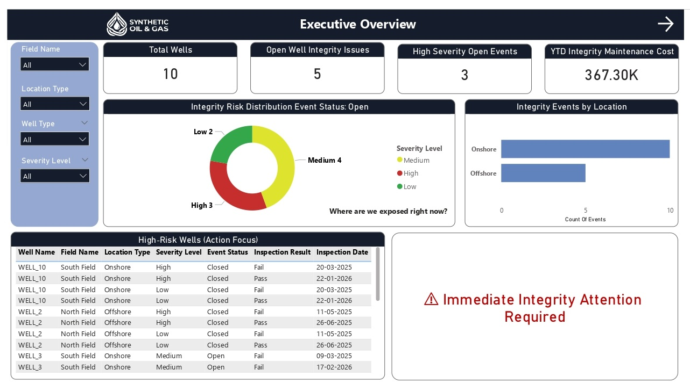
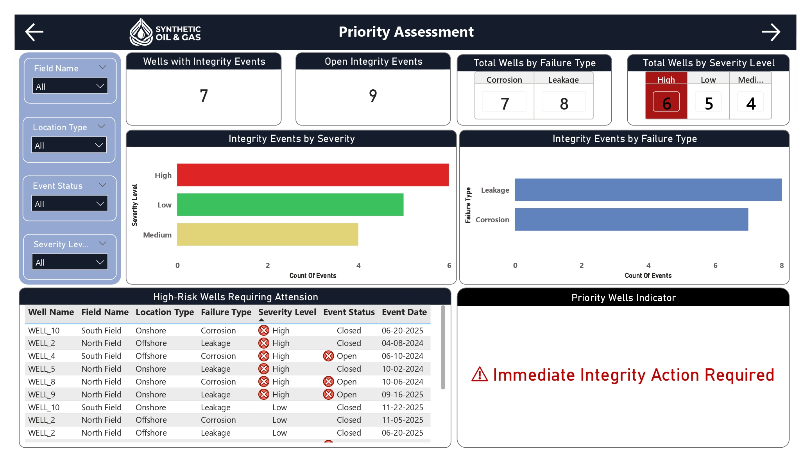
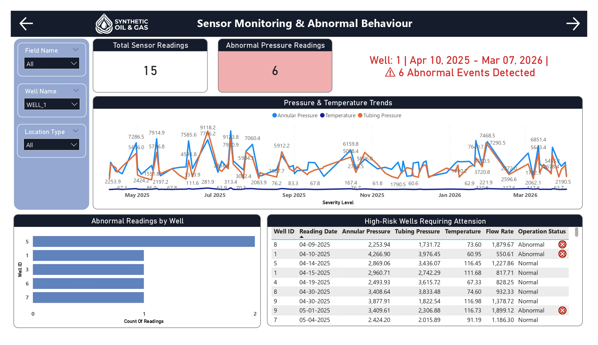
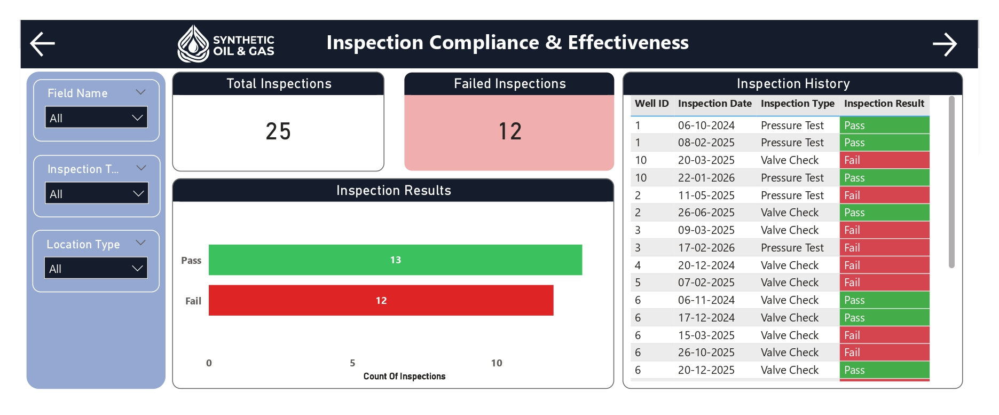
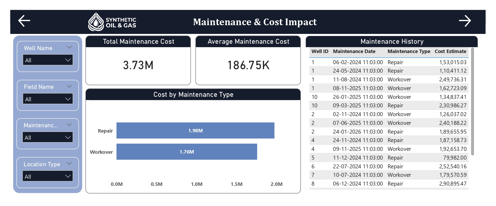
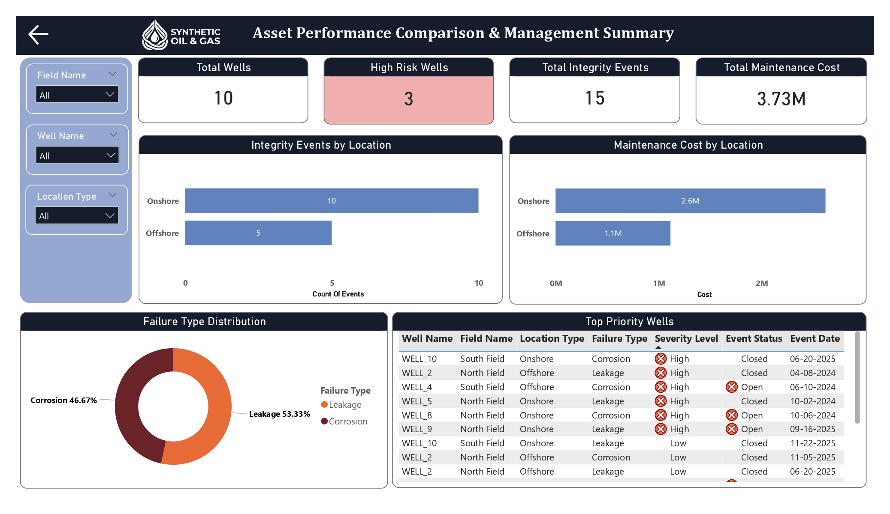

Fragmented Operational Data
Well master records, sensor readings, inspections, integrity events, and maintenance data were stored separately, preventing a unified integrity view.
Designed an end-to-end Microsoft Fabric data engineering and analytics solution for onshore and offshore well integrity operations, integrating operational sources, validating engineering data, identifying high-risk wells, and delivering decision-ready safety, compliance, maintenance, and cost intelligence.
Well integrity information was fragmented across operational systems, making it difficult for engineers and management to obtain a trusted, timely view of safety risk, inspection compliance, abnormal operating behaviour, and maintenance exposure.
Well master records, sensor readings, inspections, integrity events, and maintenance data were stored separately, preventing a unified integrity view.
Manual preparation increased the likelihood of duplicate records, missing values, inconsistent formats, and unreliable engineering analysis.
Time-series pressure, temperature, and flow readings required scalable incremental processing rather than repeated full reloads.
Engineers and leadership lacked centralized near-real-time reporting to identify high-risk wells and respond quickly.
Reliable analytics depended on maintaining correct parent-child relationships between wells and all related operational events.
A modern Microsoft Fabric ETL architecture was implemented to orchestrate parallel ingestion, staging, transformation, incremental loading, validation, and Power BI refresh.
Fabric Data Factory extracted Well Master, Sensor Readings, Inspections, Integrity Events, and Maintenance data simultaneously.
Each source was landed in a separate staging dataset to isolate raw operational data from analytical tables.
Applied cleansing, deduplication, null handling, format checks, and domain-specific business rules.
Stored Procedures appended only new validated records into wells, sensorreadings, inspections, integrityevents, and maintenance tables.
SQL checks verified row counts, foreign keys, and the absence of orphan records before analytics refresh.
Multiple operational fact tables shared the wells dimension while preserving the correct grain for sensors, inspections, incidents, and maintenance.
Delivered executive overview, risk prioritization, sensor monitoring, inspection compliance, maintenance cost, and asset comparison dashboards.
Successful validation triggered Power BI refresh so stakeholders always saw the latest trusted data.
Well master, sensor, inspection, integrity-event, and maintenance data were integrated into one governed analytical platform.
Validated incremental loading maintained trusted wells, sensorreadings, inspections, integrityevents, and maintenance datasets.
Different stakeholder groups received dedicated views for safety, risk, compliance, maintenance, cost, and asset comparison.
Automated refresh provided engineers and leadership with current validated well performance and risk information.
High-risk wells, abnormal sensor behaviour, repeated failures, and overdue inspections became visible before issues escalated.
Deduplication, null handling, format validation, business rules, row counts, and foreign-key checks improved trust in engineering analytics.
Maintenance history and cost exposure were connected to integrity risk, supporting better prioritization of inspection and intervention spend.
The reusable Microsoft Fabric framework can accommodate future operational sources with minimal architectural change.
Quantification note: The supplied documents did not provide percentage or financial savings, so the quantified impact above reflects validated solution scope and delivery outputs only.
Operational sources flow through Microsoft Fabric staging and transformation into validated SQL Server tables and decision-ready Power BI reporting.
Five operational sources in parallel
Separate Lakehouse staging datasets
Clean, deduplicate, validate, and apply rules
Stored Procedure incremental append
Row counts and foreign keys
Power BI semantic model and dashboards
Operational Sources → Lakehouse Staging → Dataflow Gen2 → SQL Server Incremental Load → SQL Validation → Power BI Refresh






Replace this placeholder with the public Power BI embed URL after publishing the report.
Explore the complete project documentation, Microsoft Fabric ETL architecture, solution design, Power BI dashboards, implementation details, and supporting assets used to build the Enterprise Well Integrity Monitoring & Operational Risk Intelligence Platform.
Discover more industry transformation and enterprise data analytics projects.